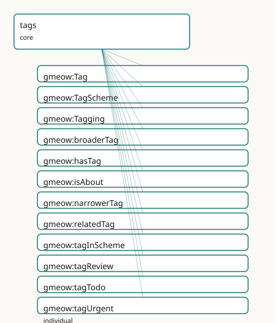

GMEOW Tags Module
- IRI: https://blackcatinformatics.ca/gmeow/slices/tags
- Tier: core
Group: core
What This Slice Covers
This slice owns 17 terms and contributes 30 mapping or projection rows. Use it when its terms match the native fact you want to preserve; use the linkage tables to see how those facts leave GMEOW for consumer vocabularies.
Dependencies
Consumers
- Folksonomy tagging reused by images and software (forced core by dual extension use).
Local Map

Examples
Folksonomy
- Source:
slices/core/tags/examples/folksonomy.ttl - GMEOW terms:
gmeow:CreativeWork,gmeow:Person,gmeow:Tag,gmeow:TagScheme,gmeow:Tagging,gmeow:broaderTag,gmeow:hasTag,gmeow:name,gmeow:narrowerTag,gmeow:relatedTag
# SPDX-FileCopyrightText: 2026 Blackcat Informatics® Inc. <paudley@blackcatinformatics.ca>
# SPDX-License-Identifier: CC-BY-4.0
#
# Worked example: tagging is flat-first, reified on demand (, P4). A bare
# gmeow:hasTag covers "this is tagged X". Tags themselves form a SKOS-style poly-
# hierarchy (gmeow:broaderTag / gmeow:narrowerTag / gmeow:relatedTag) inside a
# gmeow:TagScheme. When the PROVENANCE of a tagging matters — who applied it, in
# which scheme — it is promoted to a reified gmeow:Tagging relator binding tagger
# × tagged × tag × scheme, so a contested or machine-applied tag is auditable.
@prefix gmeow: <https://blackcatinformatics.ca/gmeow/> .
@prefix ex: <https://blackcatinformatics.ca/gmeow/examples/tags/> .
@prefix rdfs: <http://www.w3.org/2000/01/rdf-schema#> .
# --- A scheme and a small tag hierarchy within it.
ex:scheme a gmeow:TagScheme ; rdfs:label "Research topic keywords"@en .
ex:tagAI a gmeow:Tag ;
rdfs:label "artificial-intelligence"@en ;
gmeow:tagInScheme ex:scheme ;
gmeow:narrowerTag ex:tagML .
ex:tagML a gmeow:Tag ;
rdfs:label "machine-learning"@en ;
gmeow:tagInScheme ex:scheme ;
gmeow:broaderTag ex:tagAI ;
gmeow:relatedTag ex:tagNLP .
ex:tagNLP a gmeow:Tag ;
rdfs:label "natural-language-processing"@en ;
gmeow:tagInScheme ex:scheme .
# --- Flat tagging: the common case.
ex:paper a gmeow:CreativeWork ;
gmeow:title "A Survey of Transformer Architectures"@en ;
gmeow:hasTag ex:tagML .
# --- Reified Tagging: WHO applied a tag, and under which scheme — auditable.
ex:alice a gmeow:Person ; gmeow:name "Alice"@en .
ex:taggingNLP a gmeow:Tagging ;
gmeow:taggingTagged ex:paper ;
gmeow:taggingTag ex:tagNLP ;
gmeow:taggingTagger ex:alice ;
gmeow:taggingScheme ex:scheme .
Terms
Classes
| Term | Label | Definition |
|---|---|---|
gmeow:Tag |
Tag | An open, user-minted tag — an information object whose identity is its IRI and whose surface form is carried by rdfs:label. Synonyms are multiple labels; homon... |
gmeow:TagScheme |
Tag Scheme | A namespaced set of tags — a project vocabulary, a personal tag bucket, or a controlled vocabulary. Multi-tenant: many schemes coexist, and a tag may belong to... |
gmeow:Tagging |
Tagging | A reified tagging act — a gufo:Relator mediating a tagged resource, a tag, a tagger, and optionally a scheme and time interval. Bears provenance (gmeow:wasAttr... |
Properties
| Term | Label | Definition |
|---|---|---|
gmeow:broaderTag |
broader tag | A broader, more general tag. Transitive. Optional: folksonomy stays flat-first. |
gmeow:hasTag |
has tag | Relates an entity to a user-minted tag — the 80% flat shortcut. Non-functional: an entity may carry many co-equal tags. Period, confidence, tagger and suppress... |
gmeow:isAbout |
is about | Aboutness — a resource is about another resource. Distinct from typing (rdf:type) and from tagging (gmeow:hasTag): aboutness is a semantic subject-matter relat... |
gmeow:narrowerTag |
narrower tag | A narrower, more specific tag. Inverse of gmeow:broaderTag. Optional. |
gmeow:relatedTag |
related tag | A tag related to this tag by an associative link. Symmetric. Optional. |
gmeow:tagInScheme |
tag in scheme | Relates a tag to a scheme it belongs to. Non-functional: a tag may reside in many schemes (cross-listing). |
gmeow:taggingInterval |
tagging interval | The time interval over which the tagging act holds. A relator carries its period this way (matching gmeow:usageInterval, gmeow:relationshipInterval) rather tha... |
gmeow:taggingScheme |
tagging scheme | The tag scheme within which the tagging act is performed. Functional per relator: one scheme per Tagging (the tag itself may belong to multiple schemes). |
gmeow:taggingTag |
tagging tag | The tag applied in a tagging act. Functional per relator: one tag per Tagging. |
gmeow:taggingTagged |
tagging tagged | The entity that is tagged in a tagging act. Functional per relator: one tagged entity per Tagging. |
gmeow:taggingTagger |
tagging tagger | The agent who performed the tagging act. Non-functional: a tag may be co-asserted by multiple agents (e.g. a collaborative curation effort). |
Individuals
| Term | Label | Definition |
|---|---|---|
gmeow:tagReview |
review | A tag indicating that the tagged entity should be examined, evaluated, or reassessed by a person or process. |
gmeow:tagTodo |
todo | A tag marking the tagged entity as an action item or task yet to be completed. |
gmeow:tagUrgent |
urgent | A tag indicating that the tagged entity requires prompt attention or has high priority relative to other items. |
Linkages
- Rows: 30
- Projection profiles:
dcterms,doap,oai_dc,schema-org,sioc,web-annotation - External vocabularies:
dc,dcterms,doap,foaf,moat,oa,rdf,schema,sioc,skos,tags
| Source | Kind | Profile | Predicate/Relation | Target | Evidence |
|---|---|---|---|---|---|
gmeow:Tag |
equivalence | - |
skos:closeMatch | moat:Tag | gmeow-tags.sssom.tsv; gmeow:eqTags016; confidence 0.8 |
gmeow:Tag |
equivalence | - |
skos:closeMatch | schema:DefinedTerm | gmeow-tags.sssom.tsv; gmeow:eqTags006; confidence 0.9 |
gmeow:Tag |
equivalence | - |
skos:closeMatch | skos:Concept | gmeow-tags.sssom.tsv; gmeow:eqTags001; confidence 0.9 |
gmeow:TagScheme |
equivalence | - |
skos:closeMatch | schema:DefinedTermSet | gmeow-tags.sssom.tsv; gmeow:eqTags007; confidence 0.9 |
gmeow:TagScheme |
equivalence | - |
skos:closeMatch | skos:ConceptScheme | gmeow-tags.sssom.tsv; gmeow:eqTags002; confidence 0.9 |
gmeow:Tagging |
equivalence | - |
skos:closeMatch | oa:Annotation | gmeow-tags.sssom.tsv; gmeow:eqTags012; confidence 0.85 |
gmeow:Tagging |
equivalence | - |
skos:closeMatch | tags:Tagging | gmeow-tags.sssom.tsv; gmeow:eqTags015; confidence 0.85 |
gmeow:broaderTag |
equivalence | - |
skos:closeMatch | skos:broader | gmeow-tags.sssom.tsv; gmeow:eqTags003; confidence 0.95 |
gmeow:hasTag |
equivalence | - |
skos:closeMatch | schema:keywords | gmeow-tags.sssom.tsv; gmeow:eqTags008; confidence 0.8 |
gmeow:isAbout |
equivalence | - |
skos:closeMatch | dcterms:subject | gmeow-dublin-core.sssom.tsv; gmeow:eqDcTerms003; confidence 0.9 |
gmeow:isAbout |
equivalence | - |
skos:closeMatch | dcterms:subject | gmeow-tags.sssom.tsv; gmeow:eqTags010; confidence 0.9 |
gmeow:isAbout |
equivalence | - |
skos:closeMatch | foaf:topic | gmeow-tags.sssom.tsv; gmeow:eqTags011; confidence 0.85 |
gmeow:isAbout |
equivalence | - |
skos:closeMatch | schema:about | gmeow-tags.sssom.tsv; gmeow:eqTags009; confidence 0.9 |
gmeow:relatedTag |
equivalence | - |
skos:closeMatch | skos:related | gmeow-tags.sssom.tsv; gmeow:eqTags004; confidence 0.95 |
gmeow:tagInScheme |
equivalence | - |
skos:closeMatch | skos:inScheme | gmeow-tags.sssom.tsv; gmeow:eqTags005; confidence 0.95 |
gmeow:taggingTag |
equivalence | - |
skos:closeMatch | oa:hasBody | gmeow-tags.sssom.tsv; gmeow:eqTags014; confidence 0.85 |
gmeow:taggingTagged |
equivalence | - |
skos:closeMatch | oa:hasTarget | gmeow-tags.sssom.tsv; gmeow:eqTags013; confidence 0.9 |
gmeow:Tagging |
projection | schema-org |
projects to / <= | schema:keywords | gmeow:mapSchemaTaggingKeyword; confidence 0.7; lossy: tagger, scheme, interval, confidence, provenance dropped; only tag label survives; transform gmeow:fnTagToKeyword |
gmeow:Tagging |
projection | web-annotation |
projects to / <= | oa:Annotation, oa:hasBody, oa:hasTarget, oa:motivatedBy, oa:tagging, rdf:type | gmeow:mapWebAnnotationTagging; confidence 0.8; lossy: confidence, temporal scope (taggingInterval), scheme dropped; tagger and attribution omitted (not projected); transform gmeow:fnTaggingToAnnotation |
gmeow:hasTag |
projection | doap |
projects to / <= | doap:category | gmeow:mapDoapCategory; confidence 0.8; lossy: the tag node passes as the category resource; tagger, scheme, and interval drop |
gmeow:hasTag |
projection | schema-org |
projects to / <= | schema:keywords | gmeow:mapSchemaHasTag; confidence 0.8; lossy: tag IRI lost; only label text emitted; displayable false tags suppressed; transform gmeow:fnTagToKeyword |
gmeow:isAbout |
projection | dcterms |
projects to / = | dcterms:subject | gmeow:mapDctermsSubject; confidence 0.9 |
gmeow:isAbout |
projection | oai_dc |
projects to / = | dc:subject | gmeow:mapOaiDcSubject; confidence 0.9 |
gmeow:isAbout |
projection | schema-org |
projects to / <= | schema:subjectOf | gmeow:mapSchemaSubjectOf; confidence 0.85; lossy: the inverse reading: the topic gains subjectOf pointing back at the work |
| ... | ... | ... | ... | ... | 6 more rows |
Guide
Tags — open folksonomy, kept honest
Slice:
https://blackcatinformatics.ca/gmeow/slices/tags· tier: core The universal tagging building block: tag, scheme, and the reified act — three axes, never collapsed.
Tagging systems rot when three different things get smeared into one: typing (what a
thing ontologically is), aboutness (what a resource is about), and tagging (what label
a user chose to stick on it). This slice keeps them as three distinct, property-level
disjoint axes (Principle 9). A Tag is an information-object value — like a
skos:Concept, its identity is its IRI, its surface form is a label, and it carries no
inferential weight over rdf:type. A TagScheme is the namespace bucket that makes
folksonomy multi-tenant. And Tagging is the reified act, a gufo:Relator bearing
provenance, confidence, temporal scope, and retract-without-delete suppression
(Principle 10).
The slice is flat-first throughout: the hasTag shortcut covers the 80 % case, tag
hierarchy is optional, and nothing forces a scheme. Forced into core by dual extension
use (images and software both tag).
The three classes
gmeow:Tag
An open, user-minted tag. Synonyms are multiple labels on one IRI; homonyms are different
IRIs; coreference is asserted in data, never by collapsing tags into one. A tag is NOT a
type and NOT a property bag — no datatype value property is asserted on it. Seed
individuals (tagUrgent, tagTodo, tagReview) are illustrative anchors, not a fence.
gmeow:TagScheme
A namespaced set of tags — a project vocabulary, a personal bucket, a controlled
vocabulary. Multi-tenant by design: many schemes coexist and a tag may sit in zero or
more of them via tagInScheme (non-functional — cross-listing is normal). The
counterpart of skos:ConceptScheme and schema:DefinedTermSet.
gmeow:Tagging
The reified tagging act: a gufo:Relator mediating tagged resource, tag, tagger, and
optionally scheme and interval. Bears wasAttributedTo, confidence, and
displayable false for retraction without deletion (Principle 10). Structurally the
NameUsage/IdentityFacet idiom wearing a different hat — it inherits time-scoping,
confidence-weighting, and retract-without-delete for free. EL-visible mediation is
axiomatised: every Tagging has some tagged entity, some tag, and some tagger.
The flat shortcut and the aboutness boundary
gmeow:hasTag
The 80 % flat shortcut: entity → tag, non-functional, all tags co-equal. Period,
confidence, tagger, and suppression ride RDF-star statement annotations on the shortcut;
promote to a Tagging relator when the act itself must be a node. The pairing is
machine-usable — gmeow:hasTag gmeow:pairsWith gmeow:Tagging is asserted in the module
, so gmeow describe renders the promotion path from structure.
gmeow:isAbout
Subject-matter aboutness: a resource is about another resource. Declared
owl:propertyDisjointWith gmeow:hasTag — the axis separation is an axiom, not a
convention. The third axis, rdf:type, cannot be made disjoint in OWL (it is not an
ObjectProperty in the ontology), so that leg of the trichotomy guard lives in SHACL and
the Python tests.
The relator roles
gmeow:taggingTagged · gmeow:taggingTag · gmeow:taggingScheme
The functional-per-relator roles: one tagged entity, one tag, and (at most) one scheme
per Tagging. Two acts applying two tags are two relators — which is exactly what lets
each carry its own provenance and confidence. The tag itself may still belong to many
schemes; functionality binds the act, not the tag.
gmeow:taggingTagger
The agent who performed the act. Deliberately non-functional: a tag may be co-asserted by multiple agents (collaborative curation), and those co-assertions coexist (Principle 9).
gmeow:taggingInterval
The interval over which the tagging holds — a relator carries its period this way
(matching usageInterval, relationshipInterval), not via RDF-star annotations on the
relator node. Bridges to the temporal slice's TimeInterval.
Optional structure
gmeow:broaderTag · gmeow:narrowerTag · gmeow:relatedTag
SKOS-shaped tag relations — transitive broader, its inverse, and a symmetric associative
link. Strictly optional: folksonomy stays flat-first, and hierarchy is something a scheme
grows, never something the model demands. Transitive closure over broaderTag is the
reasoner's job; any heavier tag analytics (co-occurrence, suggestion) is solver-layer
work (Principle 12).
Alignment & boundaries
Aligns lossily to SKOS (Tag ≈ skos:Concept), schema.org (DefinedTerm), W3C Web
Annotation (a Tagging as an annotation with a tagging motivation), and MOAT — by
reference and projection, never import (Principle 5); each target flattens away part of
the relator (most drop tagger or interval), which is why the canonical form lives here.
Depends on kernel and temporal; consumed by the images and software extensions and any
slice that lets users label things.